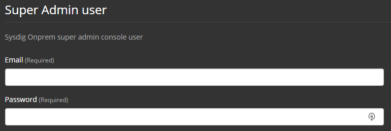
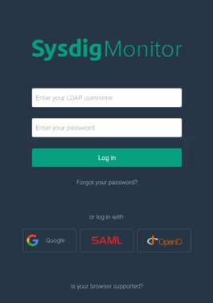

LDAP Authentication Configuration (for Platform v.1586)
Note
This article is specific to LDAP support of On-Premises Deployments version 1586.
If you are running GA Releases 1149-1511, refer to this other article instead.
LDAP support in the Sysdig software platform is used to allow user authentication using credentials in an enterprise's own directory server.
This document describes how to configure base LDAP settings, as well as the limitations of the LDAP support.
Overview
Functionality
The Sysdig platform ordinarily maintains its own user database to hold a username and password hash, as well as settings for Admin privileges, Sysdig team membership, and a user’s configured dashboards and alerts. Sysdig's LDAP authentication feature provides a means to allow the Sysdig platform to query your separate directory server to validate username/password. Upon successful authentication, a corresponding user record in the Sysdig platform’s user database is automatically created. When the LDAP feature is in use, the user’s directory password is not stored in the Sysdig user database.
Once LDAP authentication is enabled, all normal user authentication will be performed against your configured directory server. Other local, non-LDAP users that were created before LDAP was enabled can still authenticate via LDAP as long as their username in your directory matches with the username of their pre-existing record in the Sysdig user database. For example, consider a user jdoe@example.com who had been a user in the Sysdig environment before LDAP was enabled. Once LDAP authentication is enabled, if a user jdoe exists in the directory server and is able to authenticate successfully via LDAP, they will be permitted to log in to the Sysdig platform as the pre-existing jdoe@example.com user. Any user-specific configuration (Alerts, Dashboards, etc.) that were attached to jdoe@example.com will still be visible to this user. Any password previously set for such a pre-existing user record will not be used for authentication to the Sysdig platform unless LDAP authentication is disabled.
Note
LDAP can be complex to configure. Sysdig strongly recommends that you first refine your LDAP configuration in a separate test setup before applying the LDAP settings in your production environment.
Prerequisite: Have the "Super" Admin User Credentials and Token
In an environment enabled for LDAP authentication, the one user still subject to direct email+password authentication is the "super" Admin user.
Creation of this user is a required initial install step.
You can find the credentials either in the Replicated console (screenshot below) or your Kubernetes ConfigMap element sysdigcloud.default.user .
|  |
This user is required and cannot be deleted. This login provides:
A way to access the Sysdig platform when LDAP connectivity is severed.
The first Admin user in the install, essential for assigning Admin rights to other users once they’ve authenticated via your directory and their user records have been added to the Sysdig user database.
The user whose token can be used to perform further LDAP configurations.
See Retrieve the Sysdig API Security Token for details.
Configure Basic LDAP Settings
There are two ways to configure the basic LDAP settings for Sysdig: via the Sysdig UI, or via the API endpoint using scripts and HTTP methods.
Note
Whichever method is used, it will apply LDAP settings globally, to both Sysdig Monitor and Sysdig Secure.
UI-Based: Configure LDAP in Settings
At this time, the Authorization UI is available only for Sysdig Monitor.
Enter LDAP Connection Settings
Log in to Sysdig Monitor or Sysdig Secure as the "super" Admin user. and select
Settings.
Select
Authentication.Select the
LDAPtab.
Enter the relevant parameters (see tables below) and click
Save.
Table_loginConnectionSettings
Setting | Required | Description |
|---|---|---|
| Yes | URL of the directory server for the Sysdig platform to query. An example for LDAP over SSL: ldaps://172.16.0.1:636 For cleartext LDAP: ldap://176.16.0.1 Note that to use LDAPS, you'll also need to use the Replicated console (or equivalent approach in Kubernetes-based installs) to upload a Certificate Authority (CA) PEM-format certificate that the Sysdig platform will use to validate its SSL connection to the server. If you have a host with OpenSSL tools installed that can reach the directory server, you can obtain the certificate by running: # openssl s_client -showcerts -connect <server-ip>:636 The command output will typically show the server certificate first and the CA certificate second, both in PEM format. Into a text file, paste the CA certificate portion of the output that looks like: -----BEGIN CERTIFICATE----- [random text...] -----END CERTIFICATE----- Under LDAP CA certificate in the PEM format in the Replicated console, click the "Choose File" button and browse to the file you just created to select and upload it. Note that when you click Save, the Sysdig platform will restart. This is the only setting related to LDAP that requires a platform restart. Note: For environments using self-signed certificates, the |
| Yes | The distinguished name of a user that the Sysdig platform can authenticate as via LDAP in order to perform further queries about the users attempting to login to the Sysdig platform. Example: cn=Administrator,cn=Users,dc=example,dc=local This setting is required, as the Sysdig platform does not support connection to servers via anonymous bind. |
| Yes | The password for the |
| No | The distinguished name for the point in the LDAP tree below which all search queries will begin. Example: dc=example,dc=local |
| No | Defines whether the Sysdig platform will chase referrals found in LDAP query responses. If not specified, this will be set to |
Table_loginFilter
Setting | Required | Description |
|---|---|---|
| Yes | A relative distinguished name (from the cn=Users If specified as an empty string ( Note that if the cn=Users,dc=example,dc=local |
| No | An LDAP search filter (in RFC2254 format) that the Sysdig platform will use in constructing the query to identify the user record. The marker token
(&(objectClass=organizationalPerson)(sAMAccountName={0}))While this setting is optional, if not specified, no users will be able to authenticate via LDAP. |
Select LDAP for SSO
Select
LDAPfrom theEnabled Single Sign-OndropdownClick
Save Authentication.Repeat entire enablement process for Sysdig Monitor or Sysdig Secure, if you want to enable on both applications.
Script-Based: Configure LDAP Using Scripts
The configuration of the LDAP feature can be viewed, updated, and deleted by the "super" Admin via the API endpoint /api/admin/ldap/settings using HTTP methods for GET , POST , and DELETE , respectively.
The workflow is as follows:
Log in as super admin (prerequisite ).
Retrieve the Sysdig API Security Token (prerequisite)
Access
login_config.shand verify_user.sh helper scripts is available in the SSO folder atsysdig-cloud-scriptsrepository, to assist in completing this configuration.Modify
env.shModify
settings_login_simple.jsonfile with Login Connection Settings and Login Filter Settings.Execute various scripts
# get current settings: initially empty ./login_config.sh # set settings we have detailed above ./login_config.sh -s settings_login_simple.json # verify an existing user information is retrieved ./verify_user.sh -u jdoe # verify a non existing user information is not retrieved ./verify_user.sh -u nothere # optionally delete the settings # ./login_config.sh -d
See Advanced Use Cases (below) if you have a multi-server environment, or want to create LDAP users before they log in.
Details of this workflow are as follows:
Configure env.sh
To use the helper script, modify the env.sh
to set the required values for API_TOKEN and URL for your environment. Once set, invoking login_config.sh (at the sysdig-cloud-scripts repository in GitHub) helper script with no options will print the current configuration. Initially empty.
Retrieve Current LDAP Settings
# ./login_config.sh No ldap settings are set Run for further info: ./login_config.sh -h
Configure settings_login_simple.json and set withlogin_config.sh
In the sysdig-cloud-scripts repository in GitHub, find the example settings_login_simple.json and modify it for your environment, following the Tables above.
To apply the new LDAP settings invoke login_config.sh with the -s option and specify the filename containing the JSON config:
# ./login_config.sh -s settings_login_simple.json
{
"authenticationSettings": {
"id": 1,
"version": 1,
"createdOn": 1547542447000,
"type": "ldap",
"scope": "SYSTEM",
"settings": {
"loginConnectionSettings": {
"server": "ldap://172.16.0.1",
"rootDn": "dc=example,dc=local",
"managerDn": "cn=Administrator,cn=Users,dc=example,dc=local",
"managerPassword": "myMgrPassword",
"referral": "IGNORE"
},
"loginFilter": {
"searchBase": "cn=Users",
"searchFilter": "(&(objectClass=organizationalPerson)(sAMAccountName={0}))"
}
}
}
}Sample result in Active Directory
Using the specific example settings_login_simple.json and the minimal Active Directory configuration in the screenshot below, login to the Sysdig platform would now be permitted for a user jdoe that has the following distinguishedName :
CN=John Doe,CN=Users,DC=example,DC=local
|
Test User Login
To test the login configuration, the "super" Admin user can confirm if a particular user would be permitted to login given current LDAP login connection settings. To do this, perform an HTTP GET to the API endpoint /api/admin/ldap/settings/verify/USERNAME . A verify_user.sh helper script is provided to easily perform this. If invoked with the -u option and a username, and the user's login would be successful, it will return the user's information from the directory.
# ./verify_user.sh -u jdoe
{"element":"uSNCreated=12799, countryCode=0, badPwdCount=0, whenChanged=20180406232737.0Z, objectClass=top, primaryGroupID=513, givenName=John, objectGUID=..., objectSid=..., instanceType=4, whenCreated=20180406220651.0Z, dSCorePropagationData=16010101000000.0Z, sn=Doe, userAccountControl=66048, lastLogonTimestamp=131675308573317669, cn=John Doe, codePage=0, accountExpires=9223372036854775807, sAMAccountName=jdoe, sAMAccountType=805306368, userPrincipalName=jdoe@example.local, displayName=John Doe, pwdLastSet=131675260113435098, lastLogon=131682933890462204, name=John Doe, objectCategory=CN=Person,CN=Schema,CN=Configuration,DC=example,DC=local, distinguishedName=CN=John Doe,CN=Users,DC=example,DC=local, lastLogoff=0, memberOf=CN=Sysdig Viewers,CN=Users,DC=example,DC=local, logonCount=0, uSNChanged=12986"}If the user would not be able to login, an error message will be returned.
# ./verify_user.sh -u nothere Could not verify user "nothere". Check LDAP login config settings and/or system log.
Note that if LDAP authentication is disabled this method for testing user login is not available.
Optional: Delete LDAP settings
To delete LDAP settings, invoke login_config.sh with the -d option. After running the following command all LDAP users will not be able to login to the Sysdig platform.
# ./login_config.sh -d
{
"authenticationSettings": {
"id": 1,
"version": 1,
"createdOn": 1547542447000,
"type": "ldap",
"scope": "SYSTEM",
"settings": {
"loginConnectionSettings": {
"server": "ldap://172.16.0.1",
"rootDn": "dc=example,dc=local",
"managerDn": "cn=Administrator,cn=Users,dc=example,dc=local",
"managerPassword": "myMgrPassword",
"referral": "IGNORE"
},
"loginFilter": {
"searchBase": "cn=Users",
"searchFilter": "(&(objectClass=organizationalPerson)(sAMAccountName={0}))"
}
}
}
}User Experience
When a user accesses the Sysdig interface, they are prompted to enter their LDAP credentials (in the fields normally used for email/password).
Monitor: https://HOSTNAME/ or Secure: https://HOSTNAME/secure
|  |
Advanced Use Cases
Multi-Server Directories
Data about your users that need to access the Sysdig platform may be stored across many directory servers in your environment. As the Sysdig platform is only able to query one LDAP server endpoint, you would need to take extra steps to ensure successful authentication for such users.
The simplest approach to achieve this is to query against a Global Catalog. As the Global Catalog stores a copy of all Active Directory objects in a forest, this provides a fast and convenient target for the Sysdig platform to find all users that may need to authenticate. Since queries against the Global Catalog are also performed via LDAP, you simply need to ensure your LDAP configuration specifies the appropriate address and TCP port for the Global Catalog, e.g. ldap://176.16.0.1:3268 for cleartext LDAP or ldaps://172.16.0.1:3269 for LDAP over SSL. If querying against a Global Catalog, the referral option of the Sysdig platform's LDAP configuration can remain at its default setting of "IGNORE" .
If a Global Catalog is not available, another approach is to leverage referral chasing. Such chasing depends on complex interplay of configuration settings, DNS resolution, and network connectivity to multiple servers. If you require this option, carefully read the tips in this section and validate your configuration in a test environment before attempting its use in production. Contact Sysdig support for assistance as necessary.
For our example configuration, we've added another Domain Controller to our environment that holds users a separate set of users for the child domain eu.example.local .
|
We'd like to permit login for a user " eurodude " in the child domain. This user has distinguishedName :
CN=Euro Dude,CN=Users,DC=eu,DC=example,DC=local
In the example configuration settings_login_referral_follow.json shown below, the Sysdig platform still begins its LDAP queries at the same top-level server target. However, the referral option is set to "FOLLOW" , which will cause the Sysdig platform to perform subsequent queries if a query returns one or more referrals.
{
"authenticationSettings": {
"settings": {
"loginConnectionSettings": {
"server": "ldap://172.16.0.1",
"managerDn": "cn=Administrator,cn=Users,dc=example,dc=local",
"managerPassword": "myMgrPassword",
"referral": "FOLLOW"
},
"loginFilter": {
"searchBase": "dc=example,dc=local",
"searchFilter": "(&(objectClass=organizationalPerson)(sAMAccountName={0}))"
}
},
"version": 1,
"type": "ldap"
}
}Note also how in this case the rootDn option is left unspecified and the searchBase is set to the distinguished name of the top-level domain. This is necessary to ensure the scope of the chased referral queries will include the child domain. If rootDn and searchBase had been left as they were set in the settings_login_simple.json example, the initial query would have been targeted only within cn=Users,dc=example,dc=local and hence the referral would never have been returned by the top-level server.
Note these other caveats of referral chasing in the Sysdig platform:
Referrals may only be successfully chased to child domains. If referrals point to parallel domains (e.g. for our example,
dc=adjacent,dc=local) the queries will not succeed and users stored in the directory servers for such domains will not be able to authenticate.The LDAP library used by the Sysdig platform does not log information about each referral it attempts to chase. Therefore, if you enable referral chasing, it is important that you understand the server targets that may be chased in your environment and ensure the network connectivity (routing/firewalls) will permit the Sysdig platform to query these server targets. If LDAP queries are failing due to a network connectivity issue, this will typically be accompanied by delays during Sysdig user logins of approximately 30 seconds followed by a login failure with an
HTTP 504error message shown in the login screen. If this occurs, contact Sysdig support for assistance.
Creating LDAP Users Before They Login
The default behavior of the LDAP feature is to create a new record in the Sysdig user database when a user authenticates successfully via LDAP for the first time. However, it may be desirable to add such user records in advance of their first login, such as if you wish to use automation to change user permissions, assign team membership, or pre-populate Dashboard/Alert configurations. A create_user.sh helper script is available in the sysdig-cloud-scripts repository to create such user records via the API. This script can also be used to enable/disable this functionality in the Sysdig platform. See the README for details.
Additional details regarding this type of user creation in conjunction with LDAP authentication:
This method allows creation of any username, even if it doesn't currently exist in the directory that is queried via LDAP.
When LDAP authentication is enabled, such users can be created with a simple username (e.g.
jdoe) or with an email-style postfix (as is typical for non-LDAP Sysdig user, e.g.jdoe@example.com). In this latter case only the username portion (jdoe) is used when the Sysdig platform is performing an LDAP query during attempted login.While the
passwordmust be included in the config youPOSTto create the user, it is not used by the Sysdig platform when LDAP is enabled, as authentication will always be performed via LDAP. For this same reason, if a user has been created in this way, they will not be able to login unless there is a matching user in the directory that is queried via LDAP.The
firstNameandlastNamevalues as specified in the example are optional and independent from any equivalent name settings in the directory that is queried via LDAP.
Limitations and Caveats
LDAP support has been tested with Active Directory in Windows Server 2012 R2. It may work with AD versions that ship with other versions of Windows, or other directory servers that use the LDAP protocol. If you are intending to use LDAP with something other than Active Directory, please contact Sysdig Support.
The LDAP feature is only present in Sysdig software platform installs (not the SaaS version).
Only one LDAP config can exist per deployment (i.e. the platform can only query one directory server endpoint).
Because the Sysdig software platform is based on the same technology as the SaaS-based Sysdig service, it theoretically supports the configuration of multiple “customers” using the same install. However, the multi-customer option is not supported when the LDAP feature is enabled.
When LDAP authentication is enabled, adding users via email "invites" is not possible.
LDAP authentication for directory usernames that begin or end with a space character (e.g.
" jdoe"or"jdoe ") are not supported.Configuration entries that contain special characters (for instance, a
managerPasswordthat contains a backslash character) are supported, but note that you will need to perform proper JSON escaping in the configuration youPOSTto the API. If you attempt to post invalid JSON, the helper scripts will return an error message. If this occurs, you can use tools such as JSONLint to narrow down the source of the problem and/or JSON String Escape to learn how to properly escape your text.The LDAP feature does not attempt any ongoing “sync” back from the Sysdig platform user database to the directory server. Note how this impacts the following:
If a user is deleted from the directory server, their user record will remain in the Sysdig user database until a Sysdig Admin deletes it. Of course, that user will not be able to login since they will no longer be able to authenticate successfully via LDAP.
If an Admin deletes a user from the Sysdig user database, but the user can still authenticate successfully via LDAP, their Sysdig user record will be recreated if they login again via LDAP.
If a person’s username should change in the directory server (e.g. the value for
sAMAccountNamein our examples above), the next time they login, a new user record will be created for them in the Sysdig user database. Settings they previously had in the Sysdig platform such as Admin rights and Alerts/Dashboard configurations will not be present for this recreated user.
Other LDAP-centric functionality that is not currently supported (not an exhaustive list):
Mapping a user in the directory server to the Sysdig "super" Admin (such as to avoid the need to configure the this "super" Admin user).
Session expiry based on configuration in the directory server (such as to set a user account to only be valid until a certain date).
Login policies based on configuration in the directory server (such as to restrict login to certain hours).
User timeout functionality (such as to remove a user from the Sysdig user database if they have not logged in for a certain amount of time).